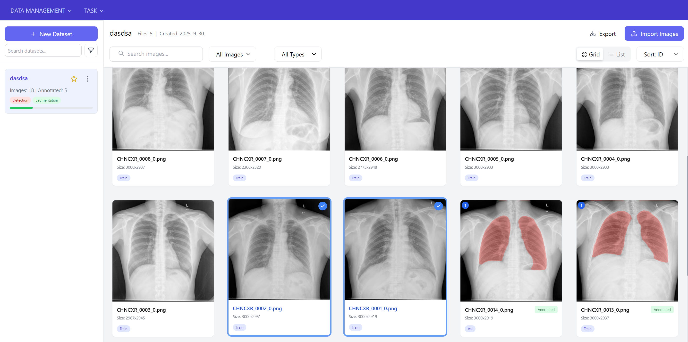
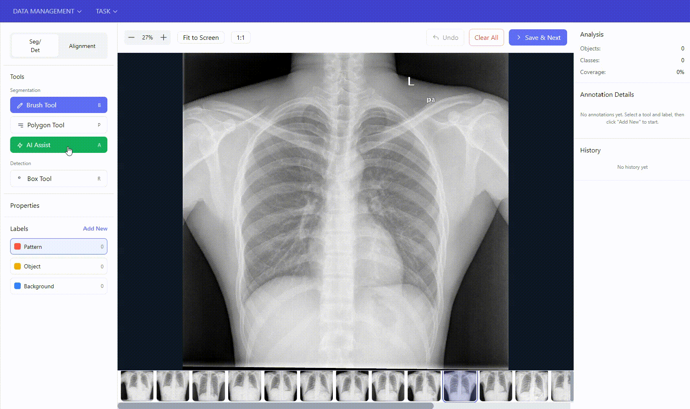

주요 기능
01
데이터셋 관리 (Dataset Management)

데이터셋 등록 및 관리
- 다중 데이터셋 관리: 여러 SEM 이미지 데이터셋을 독립적으로 관리
- 메타 데이터 관리: 데이터셋명, 설명, 생성일시, 파일 개수, Annotation 진행 상태 등의 정보를 저장, 관리
- 파일 형식 처리: PNG, JPG, TIFF 이미지 및 JSON, CSV 어노테이션 데이터 파싱
- 파일 업로드: 드래그 앤 드롭, 멀티 파일 동시 업로드 처리
- 자동 분류: 파일 메타데이터 기반 Detection/Segmentation/Alignment 태스크 타입 자동 분류
- 썸네일 생성: PIL 라이브러리를 이용해 300x300 썸네일 자동 생성 및 캐싱
- 검색 및 필터링: 데이터셋, 이미지 검색 및 필터링 조회
- 데이터셋 내보내기: 데이터셋, 이미지, Annotation 데이터 다운로드 (COCO Format)
데이터 처리
- 데이터셋 분할: 8:1:1 비율의 Train/Valid/Test 자동 분할
- 클래스 관리: 데이터셋별 독립 라벨 체계 및 JSON Schema 기반 검증
02
Annotation Tool - Segmentation/Detection

어노테이션 도구 구현
- Brush Tool: Canvas API 기반 픽셀 단위 마스킹, 동적 브러시 크기 조절
- Polygon Tool: 다각형 그리기를 통해 영역 마스킹
- Bounding Box: 박스 그리기를 통해 영역 마스킹
AI Assist
- Auto-segmentation: 사전 학습된 UNet Segmentation 모델 활용한 자동 영역 마스킹
- Pattern Matching: OpenCV 기반 유사 패턴 검출 및 영역 마스킹
실시간 분석
- 면적 계산: 마스킹 영역 픽셀 수, 면적 등의 정보 출력
- 통계 처리: NumPy 기반 실시간 통계 계산 (객체 수, 커버리지 비율)
- 메타데이터: COCO 포맷 기반 어노테이션 정보 저장 및 관리
UX 구현
- 히스토리 관리: Undo/Redo 스택 구현 (최대 20단계)
- 뷰어 컨트롤: 마우스 휠 줌, 드래그 팬 기능
- 키보드 단축키: 커스텀 훅을 통한 단축키 바인딩 시스템
03
Annotation Tool - Image Alignment (이미지 정렬)

이미지 정렬 구현
- 수동 정렬 도구: 사용자가 직접 이미지를 회전, 이동, 스케일 조정
- 대응점 매칭: 정렬 기준이 되는 3개의 대응점으로 자동 정렬
변환 알고리즘
- 변환 행렬: Affine/Perspective 변환 계산
UX 구현
- 히스토리 관리: Undo/Redo 스택 구현 (최대 20단계)
04
Task - 모델 학습 및 추론 (Training & Inference)

GPU 리소스 관리
- GPU 모니터링: GPU 사용률, VRAM, 온도 실시간 출력
- 멀티 GPU: CUDA device 자동 감지 및 선택
학습
- 하이퍼파라미터: YAML 기반 설정 파일로 Epoch, Learning Rate, Batch Size 조정
- 학습 모니터링: SSE (Server-Sent Events)를 통한 실시간 진행 상황 스트리밍 (Loss, Accuracy 등)
Segmentation 추론
- 모델 관리: 저장된 여러 버전 중 원하는 모델 로드, 모델 정보 표시
- 배치 추론: 폴더 단위로 여러 이미지 일괄 처리
- 결과 시각화: 원본 이미지 위에 세그멘테이션 결과 반투명 표시, 원본 비교, 투명도 조절 등등
- 결과 활용: 추론 결과를 어노테이션 데이터로 자동 변환, 다양한 포맷 내보내기 등